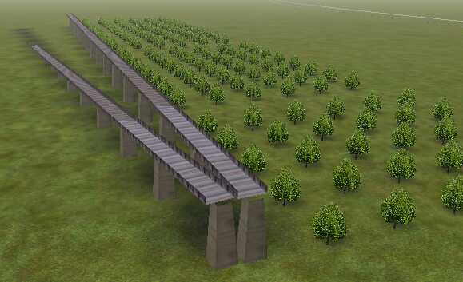
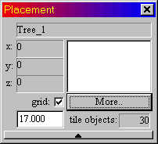

Perfect Orchards And Perfect Long Bridges
by Michael Vone
(author of the brilliant "Step by Step Guide to Route Building for Microsoft Train Simulator")
Sniper discovered how to use another RE tool: the placement grid. (It was staring at us all along!) This solves some hard problems for us. Now we can easily place objects with perfect alignment and regularity, such as trees in an orchard and long bridges made of identical sections, as shown next:


To build an orchard, decide on the tree-tree distance, for instance 17 m. Then type 17 into the box showing 100 on the Placement Tool window (100 m is the default grid size), and check the "grid" box right above it (or press G). Now you can place your tree (or any other objects) only on a square grid of size 17 m. (You don't have to use the same tree everywhere; you may vary the tree, or skip a few, leaving gaps where sick trees may have been removed.)
Now you may move and rotate your orchard as needed. Important: first uncheck the grid option (or press G). Then select all the trees in the orchard (press F2, then left-click on each tree while pressing Ctrl). Next move or rotate the whole orchard as you would any object. Finally, you can raise or lower all trees so each touches the ground correctly on slopes, by pressing H once while they are all still selected.
The same approach works for a long straight bridge, as long as you have flat terrain available to build it on (anywhere on your tiles). If you define your grid size to equal the length of a bridge section, you can quickly lay a long bridge that is oriented north/south. (For example, the JP2bluebrg bridge offered by default in a new route requires a grid size of 19.5 m, which I found by trial and error: editor's note: this tutorial predated Shape Viewer which now makes it easy to get a model's dimensions). Then move and slope and rotate the complete long bridge as one object (as shown at left in the figure above: a copy of the straight horizontal bridge has been sloped and rotated to form a ramp).This approach is of no use for track sections and road sections, because you can't rotate a chain of tracks or roads.
Unfortunately, this approach also does not work for telephone poles: you can't select a long line of them and rotate the whole line. But telephone poles are dangerous anyway in RE!